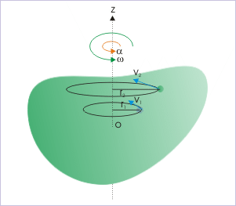
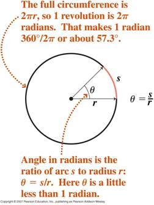
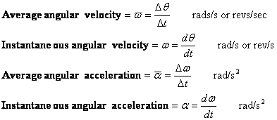
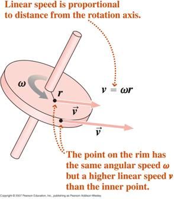
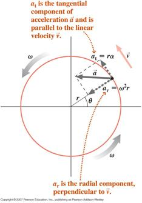
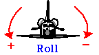
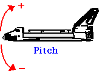
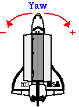

Rotational Kinematics

"Men talk of killing time, while
time quietly kills them”
Dion Boucicault
– London Assurance (1841)
- To date we have considered the kinematics and dynamics of particles, including translational and circular motion as well as the translational motion of systems of particles (in particular rigid bodies) in terms of the motion of the centre of mass of the system (body). In the latter case we are able to imagine that all the mass of the object is located at the centre of mass as far as external translational forces are concerned.
- The next step is to consider the rotation of a rigid body about a fixed axis of rotation. Note that, because we are considering a rigid body, every particle in the body remains fixed relative to the others. This means that in such a rotational motion every particle moves in a circle whose centre lies on the axis of rotation. In the diagram at right the object rotates about the z axis; the two sample particles move in circles with radii r1 and r2. If we can describe the circular motion of a particle, without direct reference to its radius, then all particles in the system will be described by the same set of equations. Although the radii of the particles are different their angular rotations are identical. Therefore it is necessary to introduce angular variables.
- Radian measure of
angles

- Angular Velocity (Speed) and
Angular Acceleration
Angular velocity and angular acceleration are defined in a similar way to velocity and acceleration. There are average and instantaneous values of each.

 Angular
acceleration
is not the same as centripetal acceleration. Centripetal acceleration is due to a
change in the direction of the velocity,
angular acceleration is due to a change in the magnitude
of the velocity (through the angle of rotation).
Angular
acceleration
is not the same as centripetal acceleration. Centripetal acceleration is due to a
change in the direction of the velocity,
angular acceleration is due to a change in the magnitude
of the velocity (through the angle of rotation).
 Exactly
as in the translational case, the difference between angular
speed and angular velocity is direction. Angular
velocity must include a direction of rotation about the axis in
question. For
example, 10 rad/s clockwise about
the x axis is an angular velocity,
10 rad/s about the x axis is an
angular speed.
Exactly
as in the translational case, the difference between angular
speed and angular velocity is direction. Angular
velocity must include a direction of rotation about the axis in
question. For
example, 10 rad/s clockwise about
the x axis is an angular velocity,
10 rad/s about the x axis is an
angular speed.
- Rotational Kinematic Equations
By direct analogy with the translational kinematic equations, circular motion about a single axis under constant angular acceleration may be described by the following four equations,
where we have made the substitutions,
Note that just as +x is defined arbitrarily to the right, the positive value of theta can be defined as clockwise or anticlockwise.
- Relation between Angular and
Translational Variables
Starting from the definition of radian measure, by differentiating with respect to time, we can show that,
where v is the tangential velocity and a is the tangential acceleration.
 A
particle executing circular motion, with a varying angular
velocity (non uniform circular motion), will experience two
components of acceleration, a tangential component due to the
changing magnitude of its velocity and a radial (centripetal)
component due to the changing direction of its velocity
A
particle executing circular motion, with a varying angular
velocity (non uniform circular motion), will experience two
components of acceleration, a tangential component due to the
changing magnitude of its velocity and a radial (centripetal)
component due to the changing direction of its velocity
The net acceleration of the particle is the vector sum of these two components as indicated below.

- For your
information…
Simultaneous rotation about more than one axis can be considered in a similar manner to projectile motion, where we extended our 1D translational discussion to 2D motion. In aeronautic applications rotations about the three axes are described as Roll, Pitch and Yaw.
  


“I don’t want to achieve immortality
through my work…I want to achieve it through not dying”
Woody Allen – Woody Allen and his Comedy (1975)

Dr. C. L. Davis
Physics Department
University of
email: c.l.davis@louisville.edu